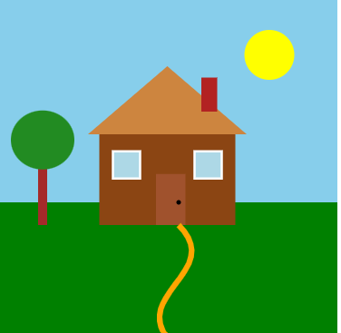
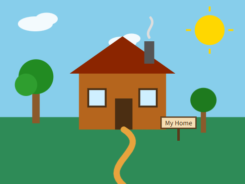

Exercise 4.1: Draw SVGs
This page shows the original SVG house and garden generated with GitHub Copilot, and the version I customised afterwards, along with the changes I made.
Before (Initial Copilot version)

After (My customised version)

What I changed
| Element | Before | After |
|---|---|---|
| Canvas size | viewBox 300×300 | viewBox 400×300 (widened to fit more scenery) |
| Colours | Default sky/grass/house/roof colours | Sky, grass, house body and roof changed to new colours |
| "House" text label | Text label next to the house | Removed (replaced by "My Home" on the sign post) |
| Fence | White picket fence (polyline) | Removed |
| Door knob | Small circle on the door | Removed |
| Roof window | Round window (circle) | Removed |
| Flower bed | Row of flowers (circles) on the grass | Removed |
| Sun rays | Not present | Added — four short <line> elements around the sun |
| Clouds | Not present | Added — two clouds of overlapping <ellipse> shapes, each in a <g> positioned with transform="translate(...)", one also scaled with scale(0.8) |
| Chimney smoke | Not present | Added — curved <path> rising from the chimney |
| Second tree | Not present | Added — smaller tree positioned and scaled with transform="translate(...) scale(0.7)" |
| Sign post | Not present | Added — <line> post, <rect> board, and <text> reading "My Home" |
| Windows | Two windows grouped in <g> with transform="translate(...)" |
Kept unchanged |
| Garden path | Curved <path> | Kept, made thicker with rounded ends |